|
3-4-2-1
|
Netherlands | 1 | - | 1 | Morocco |
4-2-3-1
|
| HT 0-0 Pens. 2-3 | ||||||
|
FIFA World CupTuesday 30 June 2026
|
||||||
- Venue
- Estadio Monterrey
- Attendance
- 51,243
- Referee
- Wilton Pereira Sampaio
- 2
Substitution71'
N. Aké
T. Koopmeiners
B. Brobbey
W. Weghorst
Goal72'
C. Gakpo
Assist: C. Summerville
- 2
Substitution86'
M. van de Ven
J. Hato
R. Gravenberch
Q. Timber
Substitution110'
F. de Jong
M. de Roon
Substitution113'
C. Gakpo
J. Kluivert
Penalty scored121'
T. Koopmeiners
Missed penalty123'
J. Kluivert
Penalty scored125'
W. Weghorst
Missed penalty127'
Q. Timber
Missed penalty129'
C. Summerville
Whistle45+7'
45+7'
Whistle90+7'
90+7'
Whistle105'
105'
Whistle120'
120'
Yellow card47'
I. Diop
Substitution75'
C. Riad
A. Salah-Eddine
- 2
Substitution79'
B. Díaz
G. Yassine
A. Bouaddi
S. El Mourabet
Substitution86'
A. Ounahi
S. Rahimi
Substitution87'
B. El Khannouss
C. Talbi
Goal90+1'
I. Diop
Assist: C. Talbi
Missed penalty122'
N. El Aynaoui
Penalty scored124'
S. Rahimi
Penalty scored126'
C. Talbi
Missed penalty127'
A. Hakimi
Penalty scored130'
I. Saibari
Netherlands | |
|---|---|
Goalkeeper | |
| 1 | B. Verbruggen |
Defender | |
| 4 | V. van Dijk |
| 5 | N. Aké 71' |
| 6 | J. van Hecke |
Midfielder | |
| 8 | R. Gravenberch 86' |
| 11 | C. Gakpo 72'113' |
| 15 | M. van de Ven 86' |
| 21 | F. de Jong 110' |
| 22 | D. Dumfries |
| 24 | C. Summerville |
Forward | |
| 19 | B. Brobbey 71' |
Substitutes | |
| 3 | M. de Roon 110' |
| 7 | J. Kluivert 113' |
| 9 | W. Weghorst 71' |
| 20 | T. Koopmeiners 71' |
| 25 | J. Hato 86' |
| 26 | Q. Timber 86' |
Morocco | |
Goalkeeper | |
| 1 | Y. Bounou |
Defender | |
| 2 | A. Hakimi |
| 3 | N. Mazraoui |
| 14 | I. Diop 47'90+1' |
| 18 | C. Riad 75' |
Midfielder | |
| 6 | A. Bouaddi 79' |
| 8 | A. Ounahi 86' |
| 10 | B. Díaz 79' |
| 23 | B. El Khannouss 87' |
| 24 | N. El Aynaoui |
Forward | |
| 11 | I. Saibari |
Substitutes | |
| 7 | C. Talbi 87' |
| 9 | S. Rahimi 86' |
| 15 | S. El Mourabet 79' |
| 16 | G. Yassine 79' |
| 26 | A. Salah-Eddine 75' |


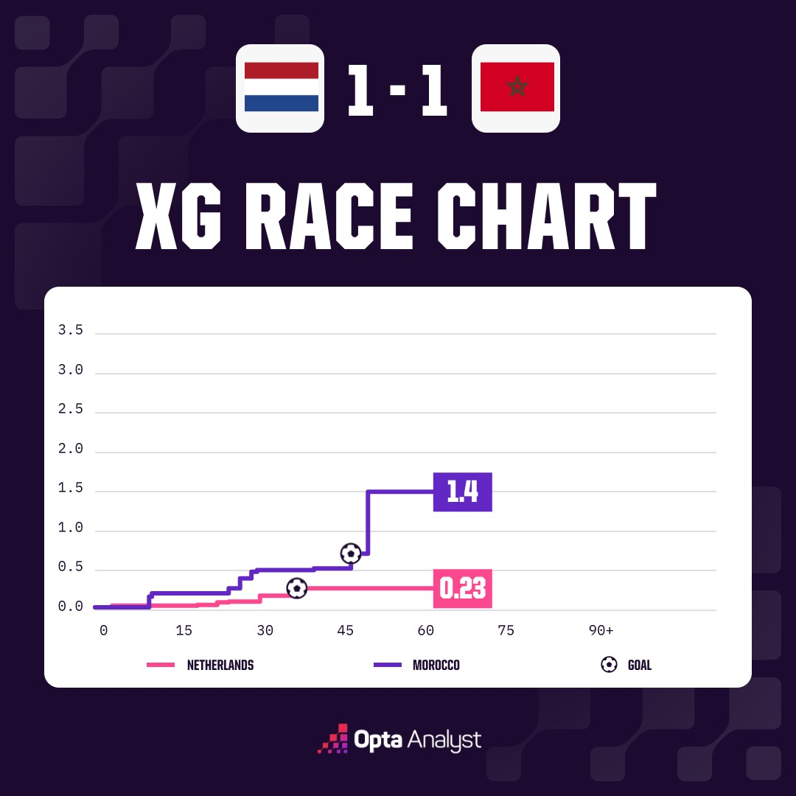
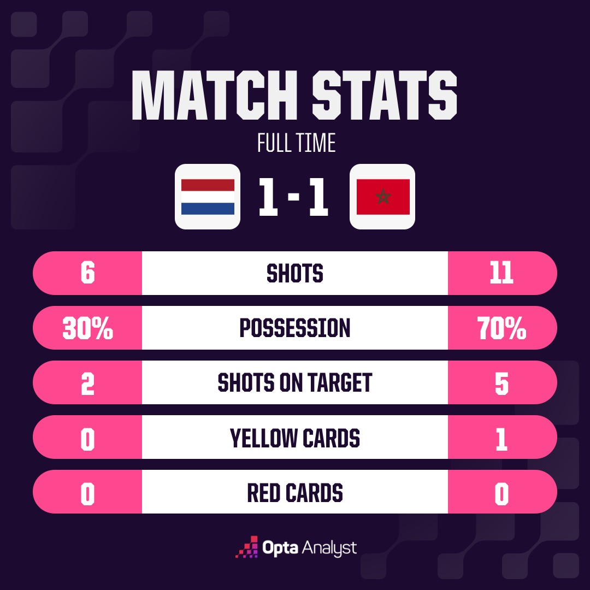
123'
Morocco have attempted 879 passes in this game, the highest total by any team in a single match in the 2026 FIFA World Cup.
123'
Morocco attempted 11 shots in this game, their lowest total in a single match in the 2026 FIFA World Cup.
123'
Netherlands attempted 6 shots in this game, their lowest total in a single match in the 2026 FIFA World Cup.
123'
Morocco are undefeated in their last 4 games in the FIFA World Cup, their last longer unbeaten streak was from 25th June 2018 to 10th December 2022, a run of 6 games.
123'
Netherlands are undefeated in their last 16 games in the FIFA World Cup, their longest unbeaten streak in the competition (since at least 1965/1966).
130'
WHAT A MOMENT FOR Ismael Saibari! They have held their nerve at the vital moment and sealed the victory for Morocco, who have seen off Netherlands 3-2 in the penalty shoot-out. It was a calm spot-kick indeed from Ismael Saibari, and the celebrations can now begin.
129'
BIG SAVE FROM THE GOALKEEPER! Will Yassine Bounou be the hero here for Morocco? They have just denied Crysencio Summerville – will that be a pivotal moment in this shoot-out?
127'
Oh dear! It is a miss from Achraf Hakimi, who fluffs their lines in the shoot-out! Perhaps the pressure got to them. It is still Morocco 2-2 Netherlands.
127'
MISSED PENALTY! No luck for Quinten Timber, who cannot find the back of the net from 12 yards – the nerves got to them and it is now Netherlands 2-2 Morocco in the shoot-out.
126'
GOAL! No mistake from Chemsdine Talbi, who keeps their cool and makes it Morocco 2-2 Netherlands in the penalty shoot-out.
125'
GOAL! No mistake from Wout Weghorst, who keeps their cool and makes it Netherlands 2-1 Morocco in the penalty shoot-out.
124'
Soufiane Rahimi makes no mistake, keeping their composure to coolly beat the goalkeeper. It is Morocco 1-1 Netherlands in the shoot-out.
123'
IT IS MISSED! Justin Kluivert cannot keep their composure and they fail to put their penalty away. The score in the shoot-out is Netherlands 1-0 Morocco.
122'
Oh dear! It is a miss from Neil El Aynaoui, who fluffs their lines in the shoot-out! Perhaps the pressure got to them. It is still Morocco 0-1 Netherlands.
121'
Teun Koopmeiners makes no mistake, keeping their composure to coolly beat the goalkeeper. It is Netherlands 1-0 Morocco in the shoot-out.
118'
A free-kick to Morocco, as Denzel Dumfries goes in and fouls Chemsdine Talbi. However, Netherlands will not mind giving one away in this area too much, with plenty of distance to their goal.
117'
Not much goalmouth action to speak of in this period of the game, with no attempts made from either side. This game could spark at any moment, however. It is Morocco who have had more of the ball, controlling 92 per cent possession in the last 10 minutes.
114'
A rash challenge from Denzel Dumfries, who sends Soufiane Rahimi tumbling, giving Morocco a free-kick. It is not in a threatening position, but it gives them a chance to get back on the ball.
113'
Substitution! Justin Kluivert replaces Cody Gakpo for Netherlands as the manager shuffles the pack. Can Justin Kluivert make an impression as this match continues?
112'
Free-kick! A foul from Neil El Aynaoui on Cody Gakpo. It is well away from Morocco’s goal, so it is unlikely to result in a chance for Netherlands.
112'
Morocco have had plenty of the ball in the last 15 minutes, with 90.29% possession compared to just 9.71% for their opponents. However, there has not been any shot to come from that possessional dominance, which will be a huge frustration for their coach.
110'
Netherlands are making a tactical change. Frenkie de Jong is leaving the field and in their place comes Marten de Roon – we will soon see if this switch has the desired impact.
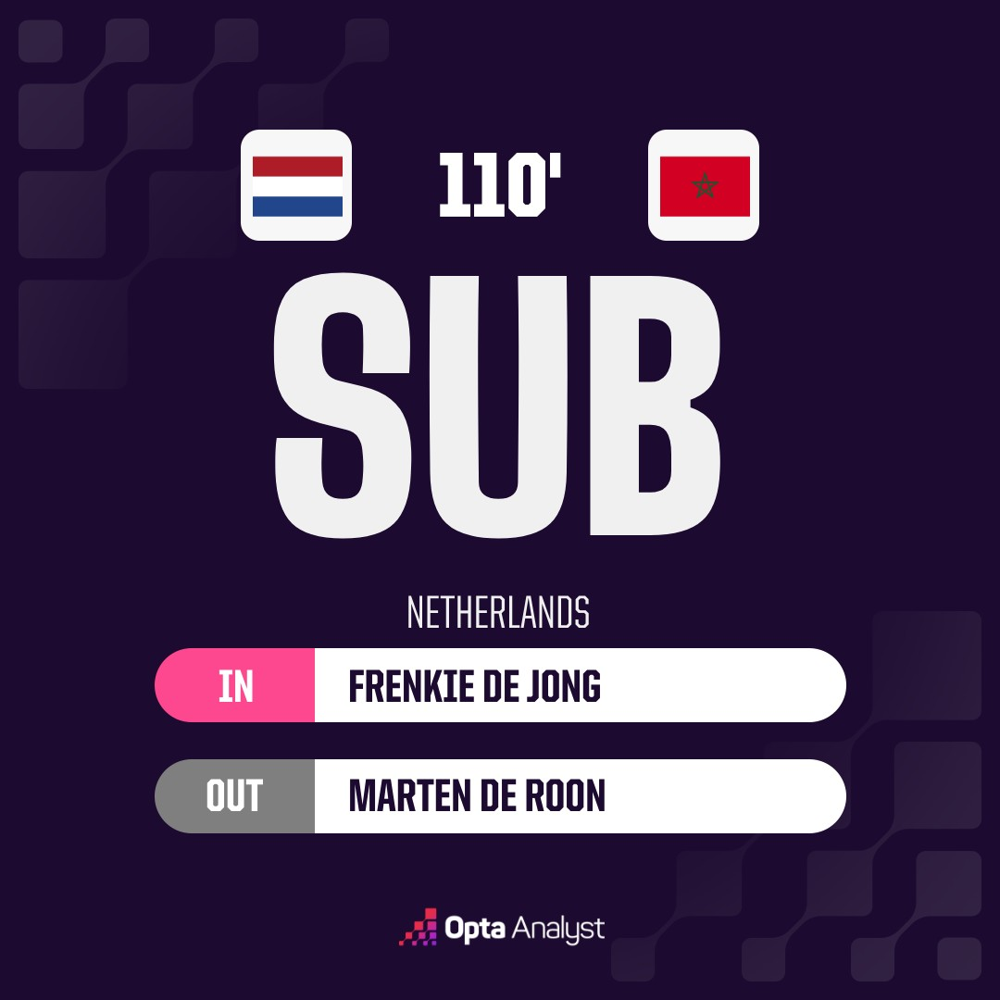
110'
Free-kick! A foul from Anass Salah-Eddine on Wout Weghorst. It is well away from Morocco’s goal, so it is unlikely to result in a chance for Netherlands.
107'
A free-kick to Morocco, as Cody Gakpo goes in and fouls Gessime Yassine. However, Netherlands will not mind giving one away in this area too much, with plenty of distance to their goal.
107'
No goalmouth action for some time now, with neither team having had a shot in the past 10 minutes. Will there be a moment that changes things soon? Morocco have seen plenty of the ball, however, with 90 per cent of the possession in their favour during that period.
106'
There is plenty of possession for Morocco, with 79.51% compared to Netherlands 20.49% in the last 15 minutes. However, Morocco have not been able to turn that dominance of the ball into a goal.
105'
Free-kick! A foul from Neil El Aynaoui on Quinten Timber. It is well away from Morocco’s goal, so it is unlikely to result in a chance for Netherlands.
102'
It has been 30 minutes since Netherlands last attempted a shot in this game.
97'
A rash challenge from Anass Salah-Eddine, who sends Frenkie de Jong tumbling, giving Netherlands a free-kick. It is not in a threatening position, but it gives them a chance to get back on the ball.
97'
Bart Verbruggen has made 5 saves, the first time he has made at least 5 saves in a match in the FIFA World Cup since facing Sweden on 20th June 2026 (7 saves).
97'
What a miss! That was a huge chance for Soufiane Rahimi, but they have failed to convert. What an opportunity that was for Morocco.
95'
Frenkie de Jong goes in on Soufiane Rahimi and concedes a foul. The free-kick is not in a particularly dangerous area from Netherlands’s viewpoint, though.
92'
A free-kick to Netherlands, as Neil El Aynaoui goes in and fouls Wout Weghorst. However, Morocco will not mind giving one away in this area too much, with plenty of distance to their goal.
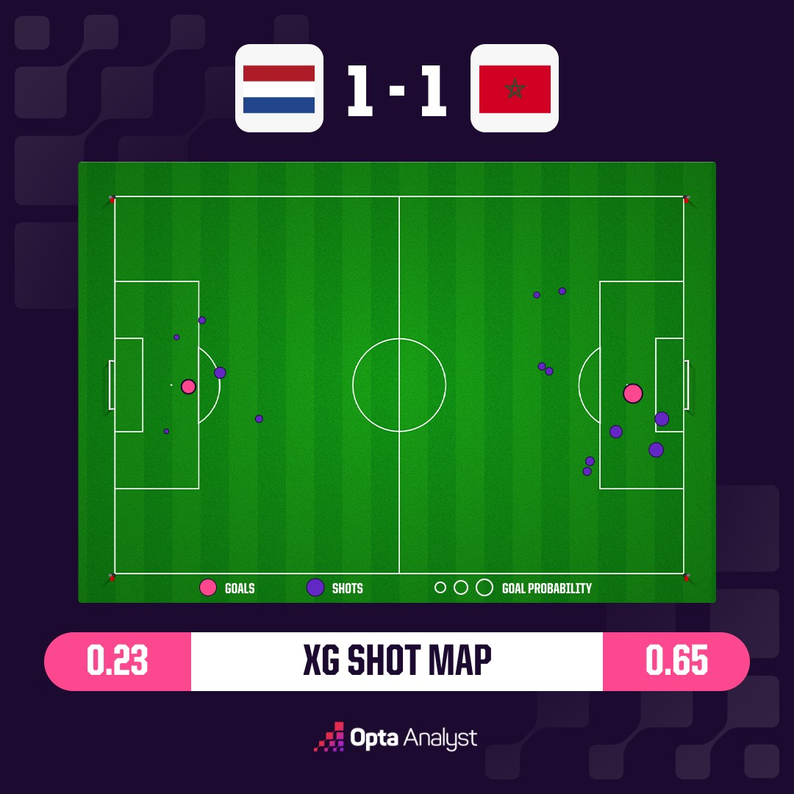
90+6'
Free-kick! A foul from Ismael Saibari on Frenkie de Jong. It is well away from Morocco’s goal, so it is unlikely to result in a chance for Netherlands.
90+5'
A foul from Denzel Dumfries on Anass Salah-Eddine sees Morocco win a free-kick, but it is not in a dangerous position, so Netherlands should be confident they can defend it easily enough.
90+3'
Free-kick! A foul from Neil El Aynaoui on Quinten Timber. It is well away from Morocco’s goal, so it is unlikely to result in a chance for Netherlands.
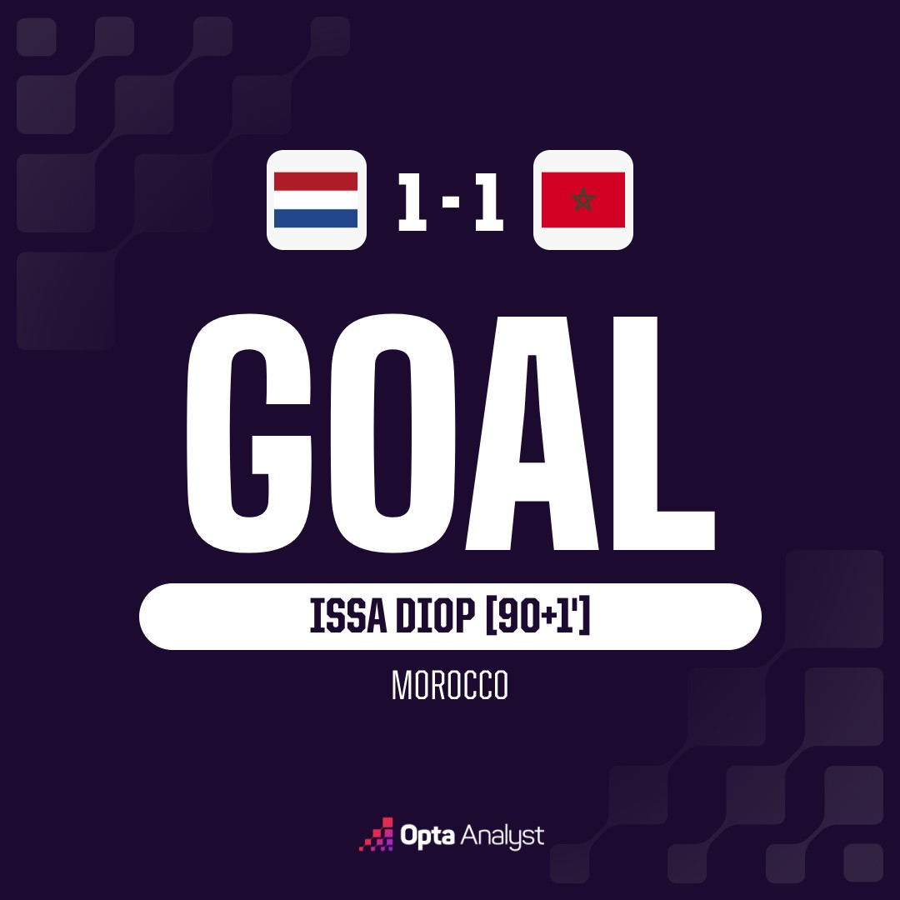
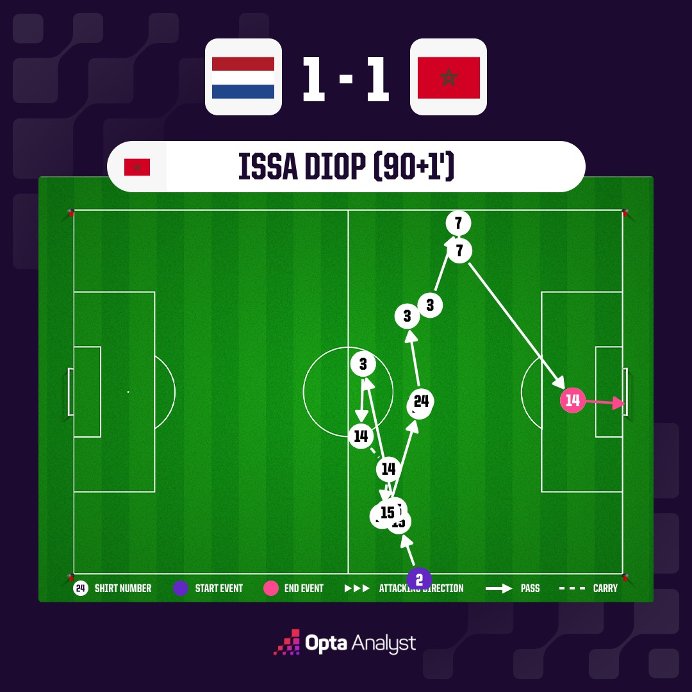
90+1'
Chemsdine Talbi has assisted his first goal in the 2026 FIFA World Cup.
90+1'
Issa Diop has scored his first goal in the 2026 FIFA World Cup.
90+1'
GOAL! Morocco drag themselves level thanks to Issa Diop's effort from inside the area. It's all square!
88'
Still behind, but Morocco are refusing to roll over - defensive urgency rising as they fend off more pressure and push for a late turnaround.
88'
Neither team has had a shot in the past 10 minutes, as this match just enters something of a down period. Morocco have seen more of the ball, with 73 per cent possession, but Netherlands are keeping them away from goal. There is still a chance the match will spark into life, though.
87'
Plenty of the ball in the last quarter-of-an-hour of this match for Morocco, but still Netherlands stand firm, despite having had only 13.53% of the ball in that period. Can Morocco make their possessional dominance count?
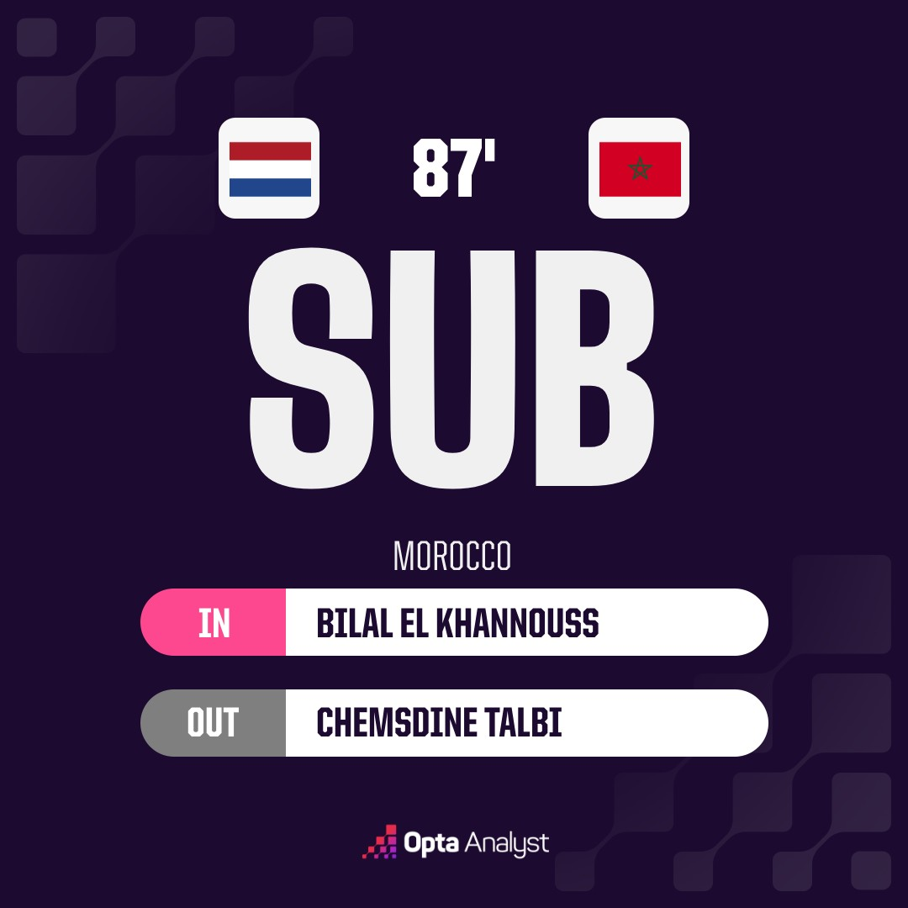
87'
Bilal El Khannouss’s match is over as Morocco decide to make a substitution. Chemsdine Talbi enters the field in what looks like a tactical change.
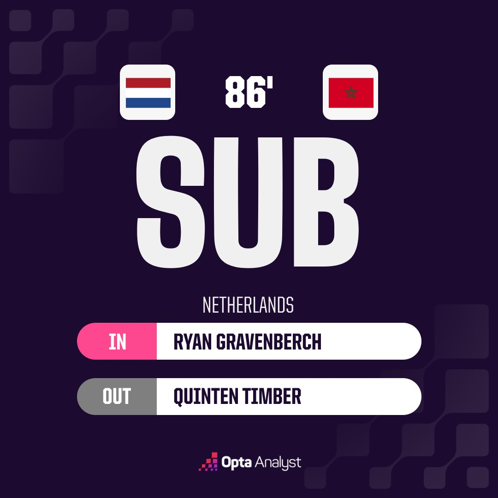
86'
The Netherlands manager is looking to the substitutes’ bench, bringing on Quinten Timber in place of Ryan Gravenberch. Will the change make a difference? Let’s find out!
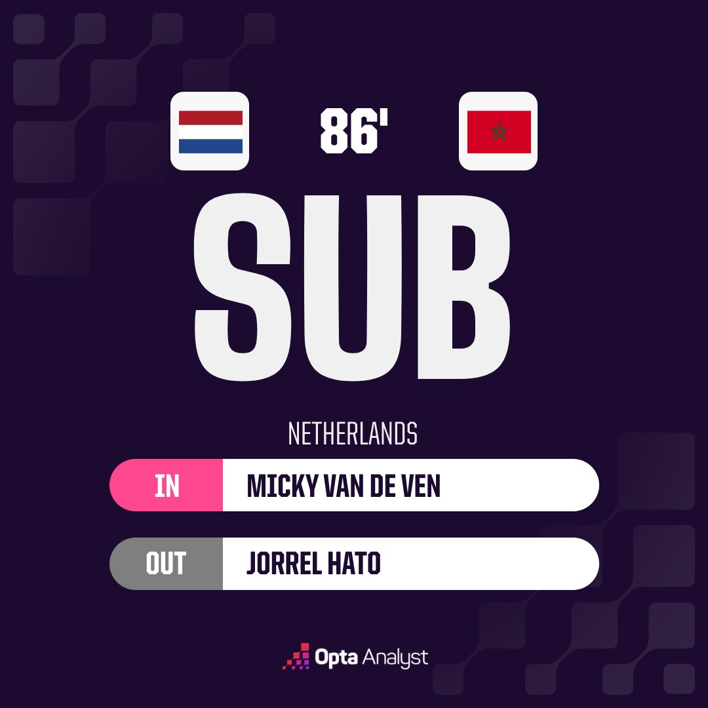
86'
The Netherlands manager is looking to the substitutes’ bench, bringing on Jorrel Hato in place of Micky van de Ven. Will the change make a difference? Let’s find out!
86'
Azzedine Ounahi’s match is over as Morocco decide to make a substitution. Soufiane Rahimi enters the field in what looks like a tactical change.
85'
A rash challenge from Ismael Saibari, who sends Virgil van Dijk tumbling, giving Netherlands a free-kick. It is not in a threatening position, but it gives them a chance to get back on the ball.
79'
A substitution for Morocco sees Ayyoub Bouaddi replaced by Samir El Mourabet. There does not appear to be any obvious sign of an injury, so that is a tactical switch.
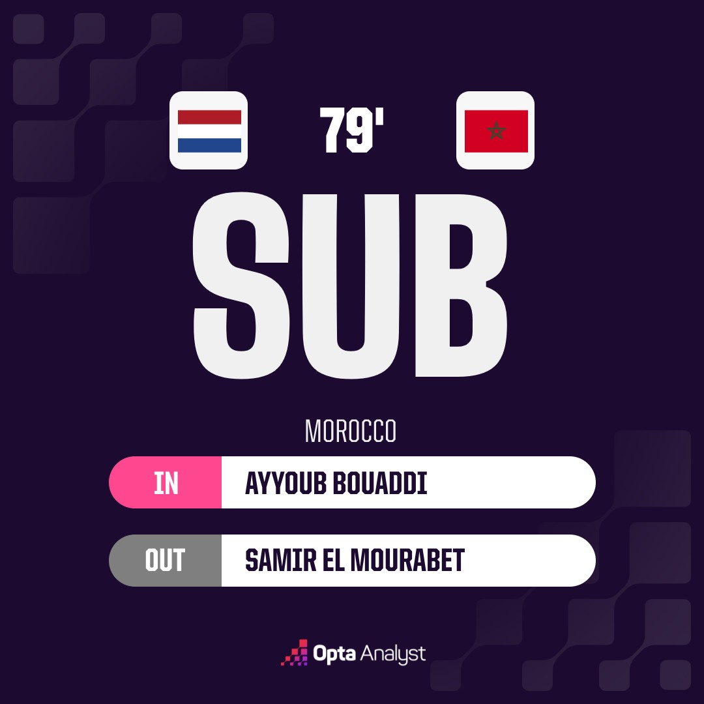
79'
Brahim Díaz’s match is over as Morocco decide to make a substitution. Gessime Yassine enters the field in what looks like a tactical change.
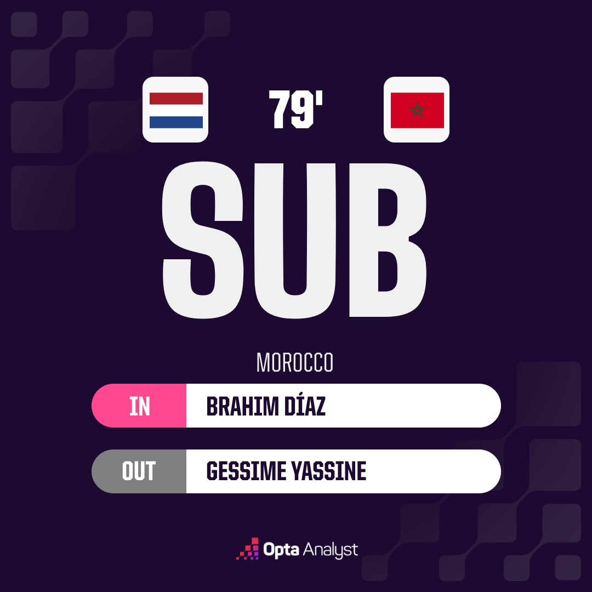
78'
BLOCKED! That was close. Anass Salah-Eddine got off a shot, which was heading in, but Micky van de Ven was on hand to make a vital intervention. Great block!
77'
A chance now for Morocco to get a good delivery into the box, after the ball is diverted behind for a corner. Morocco have been pushing for what would be a key goal, but Netherlands have stood firm so far.
77'
It’s backs to the wall now — Netherlands throwing everything into defending their advantage, with a flurry of crucial interventions.
77'
This could be a chance for Morocco, after Teun Koopmeiners fouls Achraf Hakimi, handing them a free-kick in a threatening area. A good set-piece from here could really test the Netherlands defense!
76'
With 15 minutes left to play, plus stoppage time, it is Morocco who have had the better of the possession, with 62.76%. Netherlands, on the other hand, have had 37.24% of the ball so far.
75'
Chadi Riad appears to have sustained an injury, and is unable to carry on. They make way for Anass Salah-Eddine.
75'
A free-kick to Morocco, as Frenkie de Jong goes in and fouls Azzedine Ounahi. However, Netherlands will not mind giving one away in this area too much, with plenty of distance to their goal.
72'
Crysencio Summerville has assisted his second goal in the 2026 FIFA World Cup.
72'
Cody Gakpo has scored his sixth goal in the FIFA World Cup.
72'
GOAL! The drama continues as Netherlands take the lead, courtesy of a goal from Cody Gakpo. There is still plenty of time remaining for more potential twists and turns, but as things stand Netherlands are on track for victory.
72'
Netherlands have avoided defeat in their last 26 matches when scoring first in the FIFA World Cup, since a 2-3 loss to Scotland on 11th June 1978.
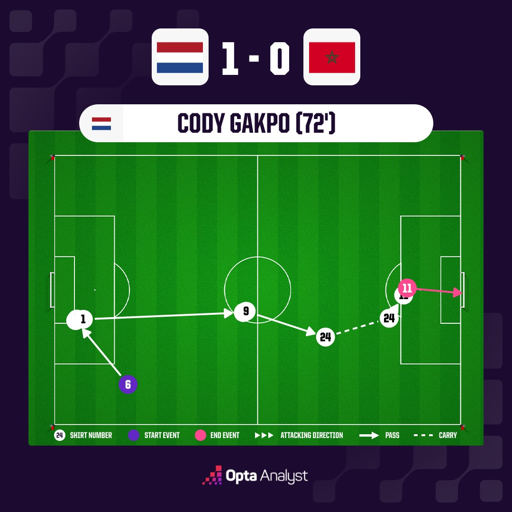
71'
Substitution! Wout Weghorst replaces Brian Brobbey for Netherlands as the manager shuffles the pack. Can Wout Weghorst make an impression as this match continues?
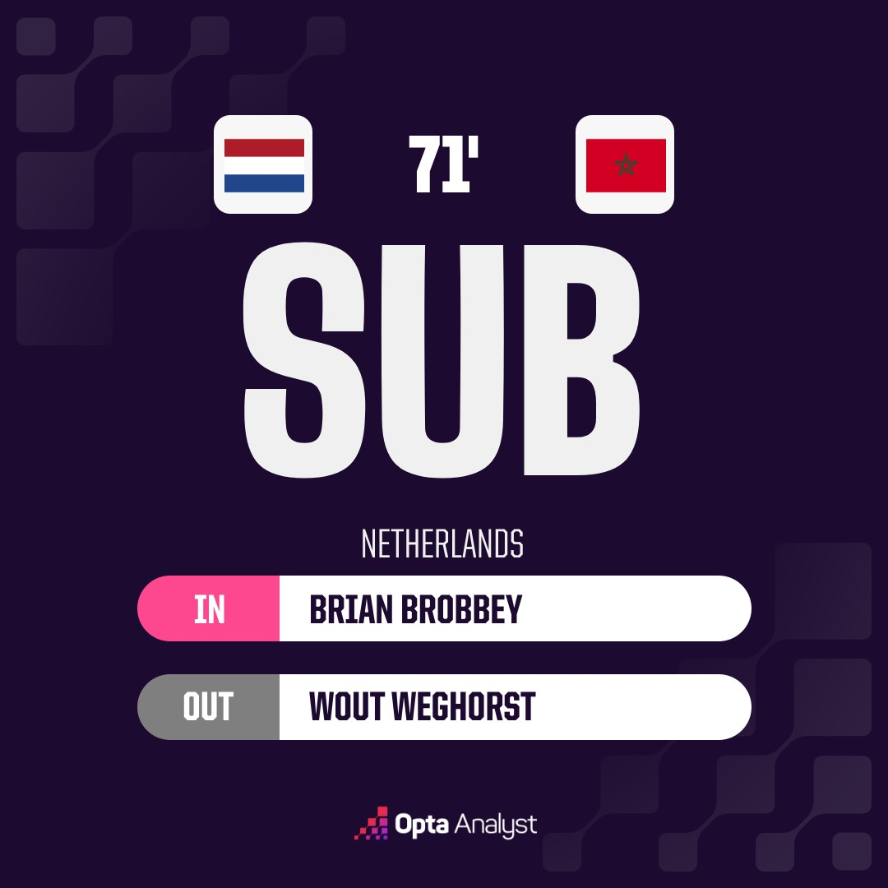
71'
Neither team has had a shot in the past 10 minutes, as this match just enters something of a down period. Morocco have seen more of the ball, with 62 per cent possession, but Netherlands are keeping them away from goal. There is still a chance the match will spark into life, though.
71'
A substitution for Netherlands sees Nathan Aké replaced by Teun Koopmeiners. There does not appear to be any obvious sign of an injury, so that is a tactical switch.
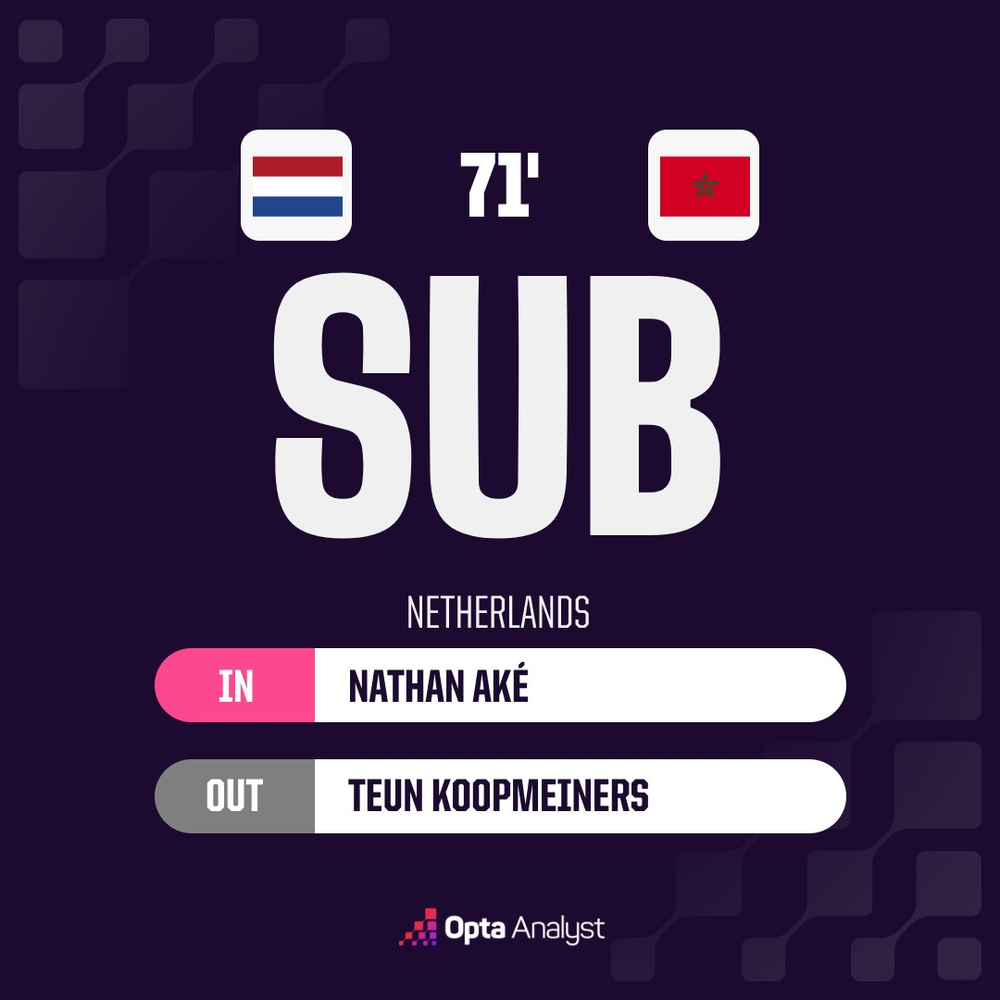
67'
Morocco are having plenty of the ball, with 78.41% possession in the last 15 minutes. However, they have been unable to transfer that possessional dominance into a goal during that period.
66'
With 25 minutes left to play, this game is about to go into its final quarter. So, that seems a good chance to check on the shot count. Morocco have had 8 efforts, with 3 of those hitting the target. Netherlands, on the other hand, have had 5 shots, getting 1 of those attempts on target.
65'
A foul from Neil El Aynaoui on Ryan Gravenberch sees Netherlands win a free-kick, but it is not in a dangerous position, so Morocco should be confident they can defend it easily enough.
62'
Can Netherlands survive here? They will have some defending to do after the ball is turned behind for a corner kick. Will Morocco take this opportunity and grab the goal they have been pushing for?
62'
Can Netherlands survive here? They will have some defending to do after the ball is turned behind for a corner kick. Will Morocco take this opportunity and grab the goal they have been pushing for?
62'
This feels like a spell that could matter - Morocco earning repeated chances to swing it in from wide areas.
61'
Corner! Morocco are pushing for a goal and now they have an opportunity from this set-piece.
59'
A free-kick to Morocco, as Jan van Hecke goes in and fouls Ismael Saibari. However, Netherlands will not mind giving one away in this area too much, with plenty of distance to their goal.
59'
BLOCK! An intervention from Issa Diop might have just prevented a goal, with the defending player getting in the way of an attempt from Ryan Gravenberch. Solid defending there!
58'
Save! A long-range strike from Bilal El Khannouss was heading in, but Bart Verbruggen got to it to parry it away from danger.
56'
No luck – it’s offside! Brian Brobbey looked to dart in behind and get on the end of a pass, yet they just went too early, and the flag is up to signal offside.
56'
Great block from Micky van de Ven, as they get in the way of an attempt from Achraf Hakimi that might have been set to cause the goalkeeper some problems. Solid defending from the Netherlands player.
53'
Free-kick! A foul from Micky van de Ven on Ayyoub Bouaddi. It is well away from Netherlands’s goal, so it is unlikely to result in a chance for Morocco.
52'
Plenty of the ball in the last quarter-of-an-hour of this match for Morocco, but still Netherlands stand firm, despite having had only 28.06% of the ball in that period. Can Morocco make their possessional dominance count?
52'
HUGE CHANCE GOES BEGGING! What a miss that is from Achraf Hakimi, who looked all set to score a goal that their team need, but instead fails to direct their attempt into the back of the net. That was a big, big opportunity for Morocco.
48'
That is a disappointing effort from Ayyoub Bouaddi, who went for glory but got their attempt wrong, and the shot sailed off target. A frustrating moment for Morocco.
48'
Save! A big stop from Yassine Bounou, who reacts to keep out Micky van de Ven's attempt from inside the area.
47'
A yellow card for Morocco's Issa Diop. They will have to walk a tightrope for the rest of this match, and Netherlands will likely look to target them and draw a second bookable offence.
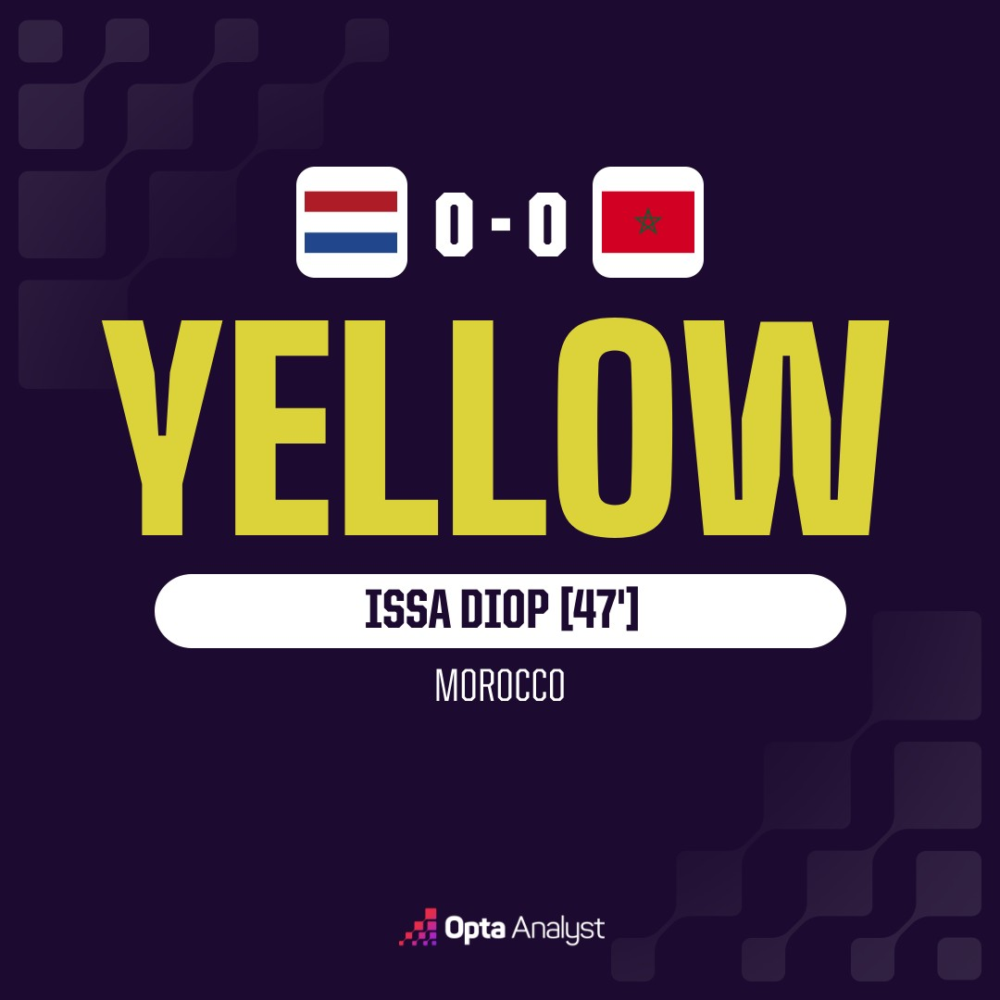
47'
A foul from Issa Diop on Brian Brobbey sees Netherlands win a free-kick, but it is not in a dangerous position, so Morocco should be confident they can defend it easily enough.
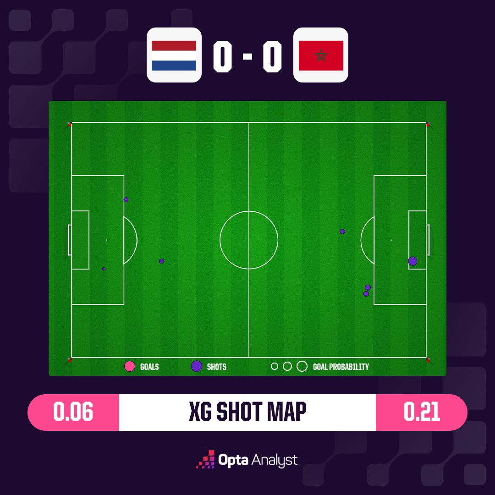
45+7'
Half-time! The referee blows the whistle and it is time for the interval. As we reach the break it is Netherlands 0-0 Morocco at Estadio Monterrey.
45+5'
Good play from Achraf Hakimi, who draws a foul from Micky van de Ven to hand Morocco a free-kick in a dangerous position. Will they create something from this set-piece?
45+3'
That is a disappointing effort from Azzedine Ounahi, who went for glory but got their attempt wrong, and the shot sailed off target. A frustrating moment for Morocco.
45+2'
Morocco showing great composure despite going behind early - their passing flow remains intact as they work to get back into this contest.
45+1'
A rash challenge from Brian Brobbey, who sends Yassine Bounou tumbling, giving Morocco a free-kick. It is not in a threatening position, but it gives them a chance to get back on the ball.
44'
MISS! A shot from Micky van de Ven ends up being off target. They might have done a bit better with that one, but it remains Netherlands 0-0 Morocco.
41'
A foul from Cody Gakpo on Ayyoub Bouaddi sees Morocco win a free-kick, but it is not in a dangerous position, so Netherlands should be confident they can defend it easily enough.
41'
Netherlands have not had a shot on target so far in this game.
37'
Plenty of the ball in the last quarter-of-an-hour of this match for Netherlands, but still Morocco stand firm, despite having had only 34.96% of the ball in that period. Can Netherlands make their possessional dominance count?
37'
Netherlands win a corner after Denzel Dumfries sees a shot diverted wide by Noussair Mazraoui. Can Netherlands make this opportunity count, or will Morocco defend this?
37'
It has been 30 minutes since Netherlands last attempted a shot in this game.
37'
Netherlands have had plenty of the ball in the last 15 minutes, with 65.04% possession compared to just 34.96% for their opponents. However, there has not been any shot to come from that possessional dominance, which will be a huge frustration for their coach.
33'
The Morocco defence steps up in time and there is a frustration for Denzel Dumfries, who thought they were through until the flag goes up to signal offside.
31'
A rash challenge from Ismael Saibari, who sends Crysencio Summerville tumbling, giving Netherlands a free-kick. It is not in a threatening position, but it gives them a chance to get back on the ball.
31'
Neither team has had a shot in the past 10 minutes, as this match just enters something of a down period. Morocco have seen more of the ball, with 57 per cent possession, but Netherlands are keeping them away from goal. There is still a chance the match will spark into life, though.
29'
Free-kick! A foul from Ismael Saibari on Frenkie de Jong. It is well away from Morocco’s goal, so it is unlikely to result in a chance for Netherlands.
27'
A foul from Azzedine Ounahi on Jan van Hecke sees Netherlands win a free-kick, but it is not in a dangerous position, so Morocco should be confident they can defend it easily enough.
21'
CORNER! The pressure is building for Morocco as they win a set-piece after Achraf Hakimi's attempt is blocked by Bart Verbruggen and diverted out of play.
20'
MISS! The score remains 0-0, with Netherlands relieved after Morocco’s Ayyoub Bouaddi goes for goal but sends their attempt off target. Not one to write home about, that one.
20'
MISSED! That is really poor from Neil El Aynaoui, who fails to convert from a golden opportunity, with the goal gaping. Will Morocco pay for their profligacy, or can they put that miss behind them?
18'
Not much goalmouth action to speak of in this period of the game, with no attempts made from either side. This game could spark at any moment, however. It is Netherlands who have had more of the ball, controlling 55 per cent possession in the last 10 minutes.
16'
The Morocco defence steps up in time and there is a frustration for Crysencio Summerville, who thought they were through until the flag goes up to signal offside.
14'
Free-kick! A foul from Brian Brobbey on Chadi Riad. It is well away from Netherlands’s goal, so it is unlikely to result in a chance for Morocco.
11'
A free-kick to Netherlands, as Issa Diop goes in and fouls Brian Brobbey. However, Morocco will not mind giving one away in this area too much, with plenty of distance to their goal.
10'
A rash challenge from Ismael Saibari, who sends Denzel Dumfries tumbling, giving Netherlands a free-kick. It is not in a threatening position, but it gives them a chance to get back on the ball.
7'
Free-kick! A foul from Ryan Gravenberch on Bilal El Khannouss. It is well away from Netherlands’s goal, so it is unlikely to result in a chance for Morocco.
7'
Shot blocked! Ryan Gravenberch unleashes an attempt at goal, but the ball does not reach its target thanks to Chadi Riad, who makes a solid block to stem the danger – for now.
7'
It’s been tight so far, and Morocco are making sure it stays that way with strong defensive discipline and well-timed clearances.
4'
A free-kick to Morocco, as Frenkie de Jong goes in and fouls Neil El Aynaoui. However, Netherlands will not mind giving one away in this area too much, with plenty of distance to their goal.
3'
Corner! The ball goes behind and now Netherlands will aim to deliver a good ball into the penalty area and test that Morocco defence, which has been frustrating them in recent minutes.
1'
We are under way as Netherlands kick off at Estadio Monterrey. Let's hope an entertaining contest is in store.
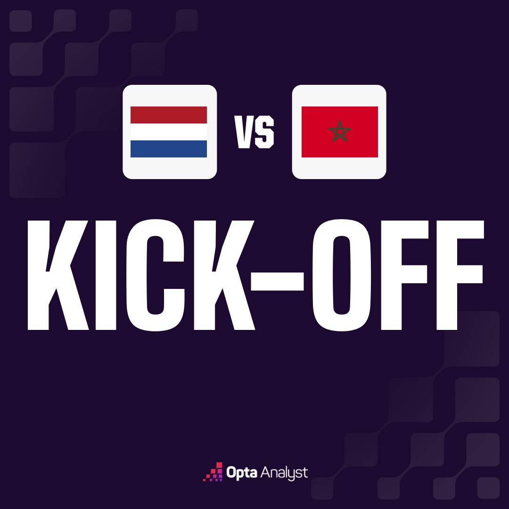
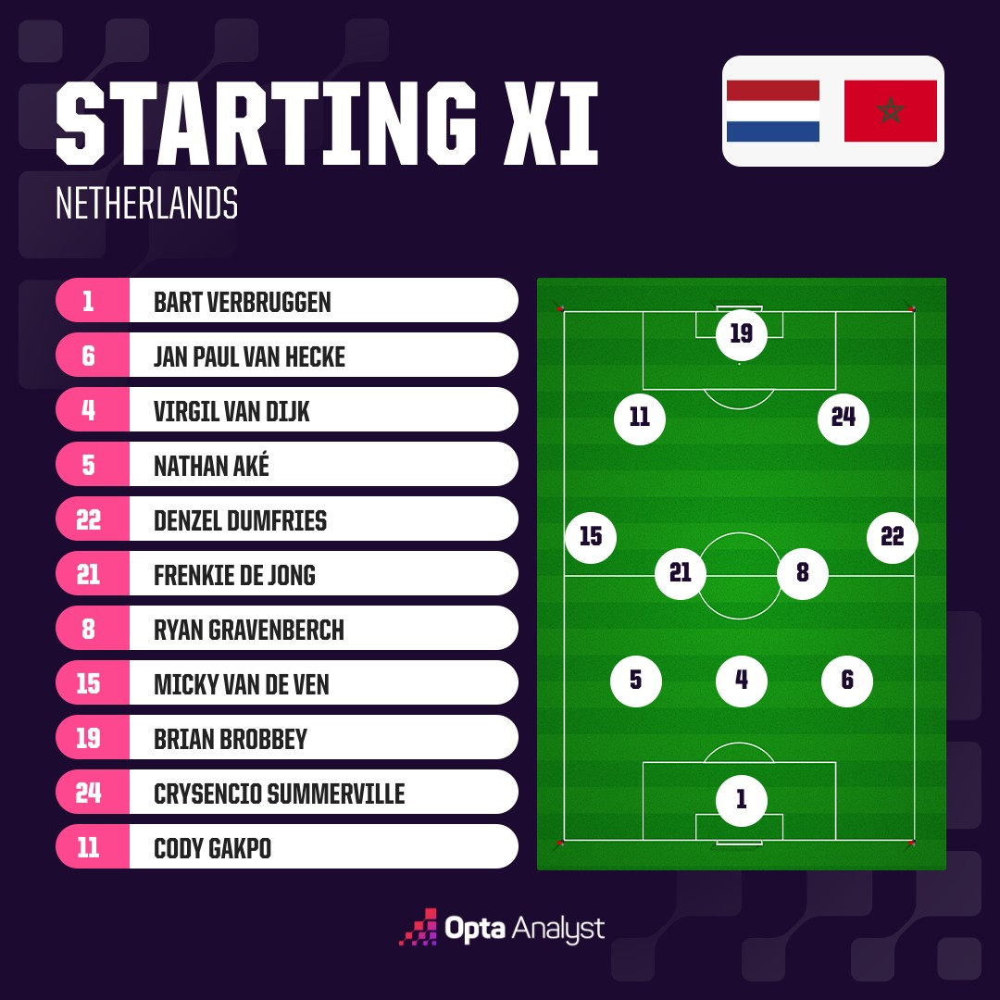
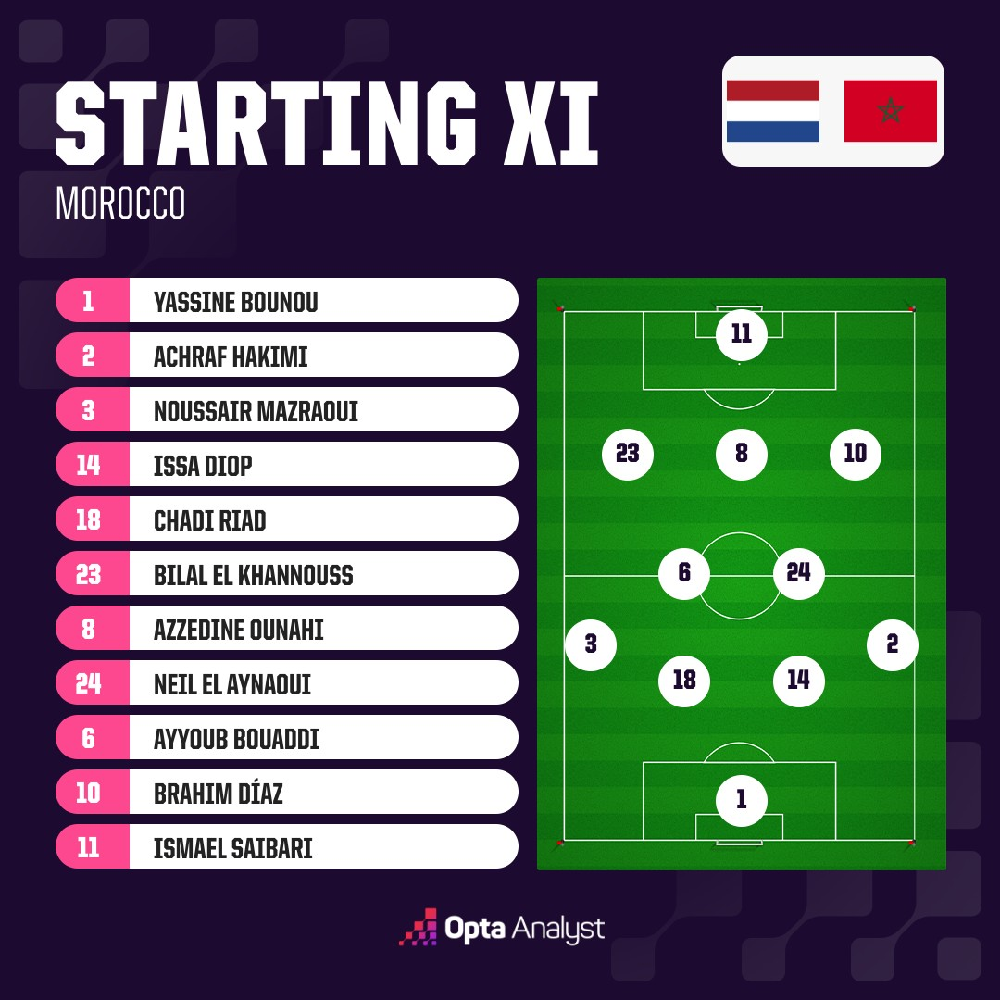
Netherlands have won their last 2 games when B. Brobbey has scored
There have been 3 or more goals scored in total in each of Netherlands's last 4 home games
The Netherlands play Morocco on Monday for a FIFA World Cup Round of 32 clash at Estadio Monterrey.
The Netherlands earned a 3-1 victory over Tunisia in their last group stage match on June 25. Brian Brobbey and Jan Paul van Hecke netted in the win. They are unbeaten in their last four games in all competitions. In seven games this year, they have four wins, two draws, and one loss.
Morocco won their last group stage game on June 24, beating Haiti 4-2 at Atlanta Stadium, improving their unbeaten streak to 32. Four players scored in the win.
Both sides finished on seven points in their respective groups. The Netherlands placed first, while Morocco were second in their group.
The Netherlands won the last meeting between the sides, triumphing 2-1 in a friendly at Stade d'Agadir in May 2017. Quincy Promes struck first for the Dutch side in the 22nd minute. Vincent Janssen also was on the scoresheet. Moubarak Boussoufa scored Morocco's lone goal in the 72nd minute.
The Netherlands have been led by Brobbey in World Cup play. The striker leads the team with three goals, which is tied for the fifth highest in the competition's scoring charts, one of those having been the tone-setting first of the match. Morocco's most productive player in attack has been Ismael Saibari, who has netted on three occasions in the current World Cup campaign, including two match-opening goals. The attacking midfielder is tied for fifth among the competition's top scorers.
Both sides are on World Cup scoring streaks, as each have found the net in every match in the competition this season.
In their last six matches in all competitions, the Netherlands have won three, drawn two and lost one. The Dutch side scored 13 and conceded seven in that period, scoring first in five of the six contests. They had six first-half goals, while their opponents netted once in the first 45 minutes. Morocco have won four and drawn two in their last six. The Moroccan side scored 16 and conceded four over that period, netting first in four of the six. They had seven goals in the first half, while their opponents netted three times before the break.
-
General
Possession 29.9% 29.85270.14870.1% Possession lost in defensive half 33 333535 Possession lost in middle third 56 565858 Duels 108 108111111 Duels success rate 49.1% 49.07447.74847.7% Aerial duels 30 303030 Aerial duels won 60.0% 604040.0% Successful dribbles 2 288 Fouls won 15 151818 Offsides 3 300 Corner awarded 5 588 -
Distribution
Passes 371 371879879 Long passes 47 474848 Long passes proportion (%) 12.7% 12.6685.4615.5% Passing accuracy 78.7% 78.70691.12691.1% Passes in opponents' half 183 183491491 Passing accuracy in opponents' half (%) 65.6% 65.57487.7887.8% Total passes in the final third 92 92190190 Passing accuracy in final third (%) 48.9% 48.91381.05381.1% Forward passes 236 236529529 Forward passes (%) 63.6% 63.61260.18260.2% Through balls 1 133 Final third entries 60 60101101 Penalty area entries 27 273030 Total open play crosses 4 499 Crosses 10 101818 Crossing accuracy 30.0% 3022.22222.2% -
Attack
Goals 1 341 Shots 6 111611 Shots on target 2 585 Blocked shots 3 322 Headed shots 2 222 Shots outside the box 2 244 Shots inside the box 4 9127 Shots accuracy excluding blocked shots 66.7% 62.557.14355.6% Shooting accuracy 33.3% 45.4555045.5% Key Passes 4 41010 -
Defence
Tackles 19 191919 Tackles success rate 52.6% 52.63273.68473.7% Clearances 22 223434 Interceptions 11 111111 Recoveries 46 465151 Attacking third recovery 5 522 Defensive third recovery 28 283030 Midfield third recovery 13 131919 Recoveries in attacking half (%) 10.9% 10.873.9223.9% -
Discipline
Fouls conceded 18 181515 Yellow cards 0 011 Red cards 0 000